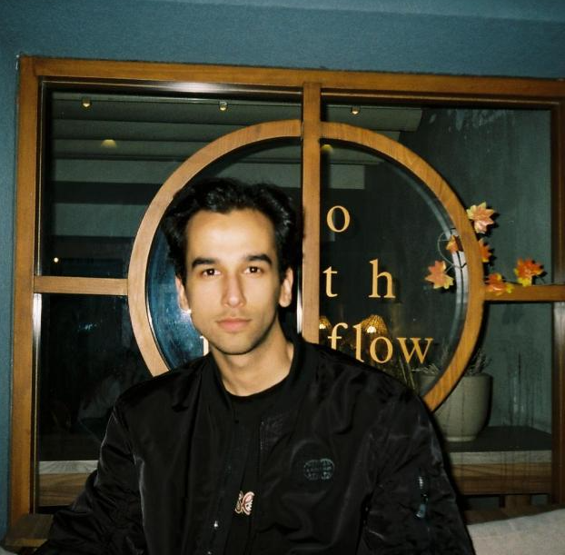

YAPAY ZEKÂCV / ML
SİSTEMLERAPI / VERİ
WEB GELİŞTİRMEWEB / ARAYÜZ
EK.
ÇALIŞMA
ALANLARIM
ALANLARIM
01 / 04PROJELERİ GÖRBURSA / İZMİR
PROJELER
Seçili çalışmalar.
Üzerinde çalıştığım projeler ve
kullandığım teknolojiler.

DEÜ
BİLGİSAYAR
MÜHENDİSLİĞİ✳
BİLGİSAYAR
MÜHENDİSLİĞİ✳
DENEYİM
Staj deneyimlerim.
Yazılım geliştirme ve ağ altyapısı.
TEKNİK YETKİNLİKLER
Kullandığım
teknolojiler.
Programlama, web, yapay zekâ
ve altyapı araçları.
YENİ PROJELERDE BİRLİKTE ÇALIŞALIM
İyi bir fikri
hayata geçirelim.
Yeni mezun mühendislik fırsatları, iş birlikleri veya projeler hakkında görüşmek için bana ulaşabilirsiniz.
↗